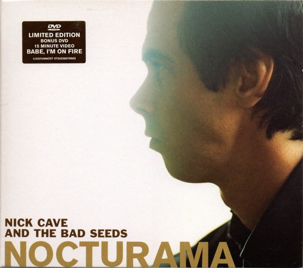

DVD
Nocturama
Nick Cave & The Bad Seeds
Media: — · Sleeve: —
—
Personal
Discogs SuggestedCA$36.10
Discogs MedianCA$36.10
Discogs HighCA$36.10
- Physical Copy ID
- BB-DVD-025
- Year
- 2003
- Label
- Mute, Mute, Mute, Mute
- Catalog #
- LCDSTUMM207, 0724358076905, CDSTUMM207, 0724354300424
- Country
- Europe
- Genre / Style
- Rock · Alternative Rock